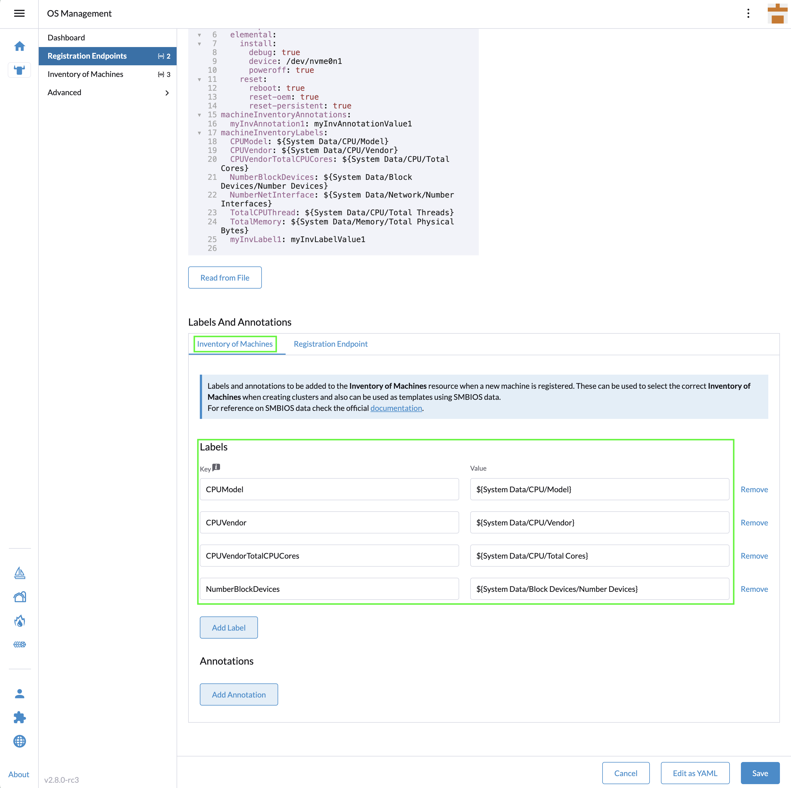
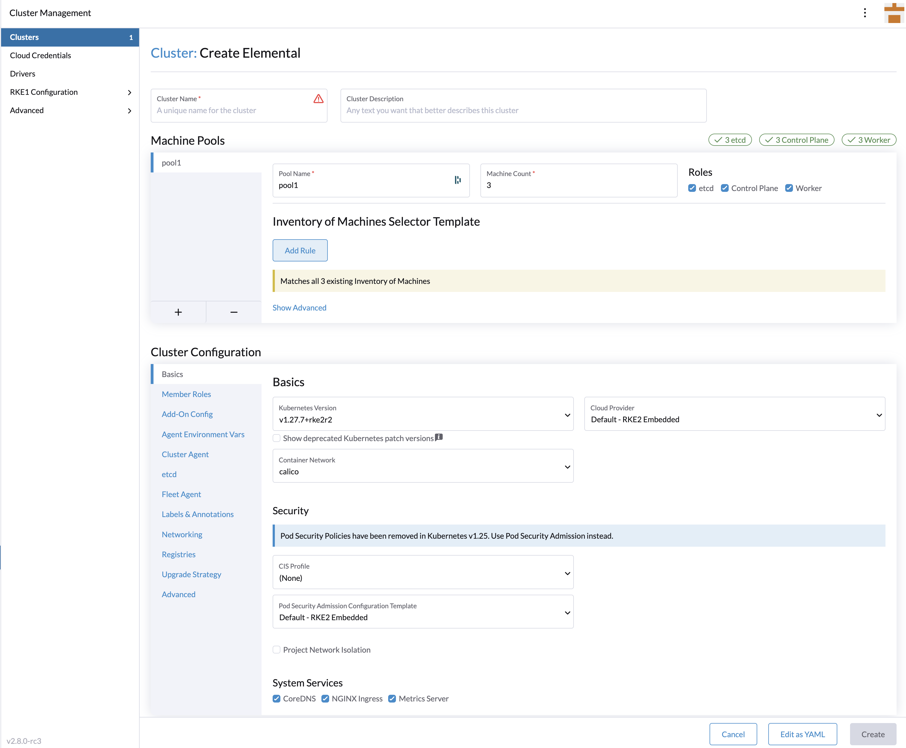

|
この文書は自動機械翻訳技術を使用して翻訳されています。 正確な翻訳を提供するように努めておりますが、翻訳された内容の完全性、正確性、信頼性については一切保証いたしません。 相違がある場合は、元の英語版 英語 が優先され、正式なテキストとなります。 |
SUSE® Rancher Prime: OS Manager視覚的な方法。
|
次の手順には、少なくともRancher 2.9.xが必要です。 |
このクイックスタートでは、既存のRancher ManagerインスタンスにSUSE® Rancher Prime: OS Managerプラグインとオペレーターをデプロイする方法を示します。
インストールが完了すると、RKE2またはK3sに基づいた新しいSUSE® Rancher Prime: OS Managerクラスターをプロビジョニングできるようになります。
ただし、ステージングまたは開発オペレーターをインストールしたい場合は、CLIモードでのみ行うことができます。
公式Rancher拡張リポジトリを追加する
Elemental拡張機能が利用できない場合は、`Official Rancher Extensions Repository`を追加する必要があります。
image::quickstart-ui-extension-repository.png[Rancher Manager拡張リポジトリを追加]。
このリポジトリが拡張UI設定を通じて追加できない場合は、https://documentation.suse.com/cloudnative/rancher-manager/latest/en/cluster-admin/helm-charts-in-rancher/helm-charts-in-rancher.html#_manage_repositories[リポジトリを追加] https://github.com/rancher/ui-plugin-charts `git`するか、次のリソースを適用することで手動で管理できます。
apiVersion: catalog.cattle.io/v1
kind: ClusterRepo
metadata:
name: rancher-ui-charts
spec:
gitBranch: main
gitRepo: https://github.com/rancher/ui-plugin-chartsElementalプラグインをインストールする。
Rancher Manager拡張サポートが有効になった後、次のように`elemental`プラグインをインストールできます。
-
`Available`タブの下に`elemental`プラグインが利用可能であることが表示されます。
image::quickstart-ui-extensions-available.png[Rancher Manager利用可能なプラグイン]。
|
`Available`タブにエントリが表示されない場合は、ページを更新してください。その後、`elemental`プラグインが表示されます。 |
-
`Install`ボタンをクリックするとポップアップが表示され、続行するには再度`Install`をクリックしてください。
image::quickstart-ui-elemental-plugin-install.png[SUSE® Rancher Prime: OS Managerプラグインインストール]。
-
`Installed`タブに、`elemental`プラグインが現在リストされています。
|
`elemental`プラグインがリストされていて、ステータスが`Installing…`のままの場合は、ページを更新してください。`elemental`プラグインは正しく表示されます。 |
`elemental`プラグインがインストールされると、Rancher Managerメニューに`OS Management`オプションが表示されます。表示されない場合は、ページを更新してください。
image::quickstart-ui-elemental-plugin-menu.png[Rancher Manager OS管理メニュー]。
エレメンタルオペレーターをインストールします。
|
以下のガイドでは、SUSE® Rancher Prime: OS Manager UIを通じてオペレーターをインストールする方法を示します。しかし、マーケットプレイスから直接インストールすることもできます。 |
ナビゲーションメニューのOS管理ボタンをクリックします。
オペレーターがまだインストールされていない場合、エレメンタルUIは`Install SUSE® Rancher Prime: OS Manager Operator`ボタンをクリックすることでデプロイできるようにします。
image::quickstart-ui-extension-operator-button.png[エレメンタルオペレーターをデプロイするボタン]。
オペレーターをインストールするためにRancherマーケットプレイスにリダイレクトされます。
`Next`ボタンをクリックします。

この画面では、カスタマイズするかデフォルト値を使用できます。続行するには`Install`をクリックしてください。

elemental-operator-crdsと`elemental-operator`が`cattle-elemental-system`ネームスペースにデプロイされているのが表示されるはずです。

|
それらが表示されない場合は、ページの上部で正しいネームスペースを選択していることを確認してください。 |
マシン登録エンドポイントを追加します。
OS管理ダッシュボードで、`Create Registration Endpoint`ボタンをクリックします。

ここでは、各詳細をそれぞれの場所に入力するか、YAMLとして編集して一度にエンドポイントを作成することができます。ここではすべてのフィールドを編集します。

|
主なオプション
|
マシン登録エンドポイントを作成すると、それはアクティブとして表示されるはずです。

インストール（シード）イメージの準備
これが最後のステップです。初期登録設定を含むシードイメージを準備する必要があります。そうすれば、自動登録、インストール、クラスターの一部として完全に展開されることができます。ファイルの内容は、ノードが登録するために必要な登録URLと、セキュアに接続するための適切なサーバー証明書に過ぎません。
このシードイメージは、無限の数のマシンをプロビジョニングするために使用できます。
シードイメージは、上記のKubernetesリソースとして作成され、`Build Media`ボタンを使用して構築できますが、最初にISOまたはRAWイメージを選択する必要があります。
ISOとは異なり、ISOでは2つのデバイス（ISOを持つデバイスとSUSE® Rancher Prime: OS Managerをインストールするための別のディスク）が必要ですが、RAWイメージは単一のデバイスからブートし、直接オペレーティングシステムをデバイスにインストールすることを可能にします。 RAWイメージにはブートパーティションとリカバリーパーティションのみが含まれており、最初にリカバリーモードでブートしてSUSE® Rancher Prime: OS Managerをインストールします（情報として、このプロセスはリセットのものに似ています）。

ビルドが完了すると、`Download Media`ボタンを使用してメディアをダウンロードできます：

このイメージでノードをブートできるようになり、ノードは次のようになります：
-
登録URLを使用して登録し、マシンごとの`MachineInventory`を作成します。
-
指定されたデバイスにSLE Microをインストールします。
-
再起動
マシンインベントリ
ノードが初めて起動する際、Rancher Managerに接続し、各ノードのためにMachine Inventoryが作成されます。

カスタム列は`Machine Inventory Labels`に基づいており、`Machine Registration Endpoint`を作成する際に追加できます：

次のスクリーンショットでは、`Hardware Labels`がカスタム列として使用されています：
縦3点リーダメニューをクリックすることで、カスタム列を追加することもできます。

最後に、これらのラベルを使用して`Machine Inventory`をフィルタリングすることもできます。
例えば、AMDマシンのみを表示したい場合は、以下のように`CPUModel`でフィルタリングできます：

最初のSUSE® Rancher Prime: OS Managerクラスターを作成します。
では、`Machine Inventory`を使用して`Create SUSE® Rancher Prime: OS Manager Cluster`をクリックしてクラスターを作成しましょう：

SUSE® Rancher Prime: OS Managerクラスターには、K3sまたはRKE2のいずれかをKubernetes用に選択できます。

ほとんどのオプションはRancherから来ているため、すべての可能性を詳細に説明することはありません。 詳細を知りたい場合は、https://documentation.suse.com/cloudnative/rancher-manager/latest/en/cluster-deployment/configuration/k3s.html[Rancher Manager K3s配布構成ドキュメント]またはhttps://documentation.suse.com/cloudnative/rancher-manager/latest/en/cluster-deployment/configuration/rke2.html[Rancher Manager RKE2配布構成ドキュメント]を確認してください。
しかし、`Inventory of Machines Selector Template`セクションを強調することが重要です。
それにより、以前に定義された`Machine Inventory Labels`を使用して、どの`Machine Inventory`を使用してSUSE® Rancher Prime: OS Managerクラスターを作成するかを選択できます。

私たちの3つのマシンインベントリには、キー`AuthenticAMD`を持つラベル`CPUVendor`が含まれているため、3台のマシンがSUSE® Rancher Prime: OS Managerクラスターを作成するために使用されます。